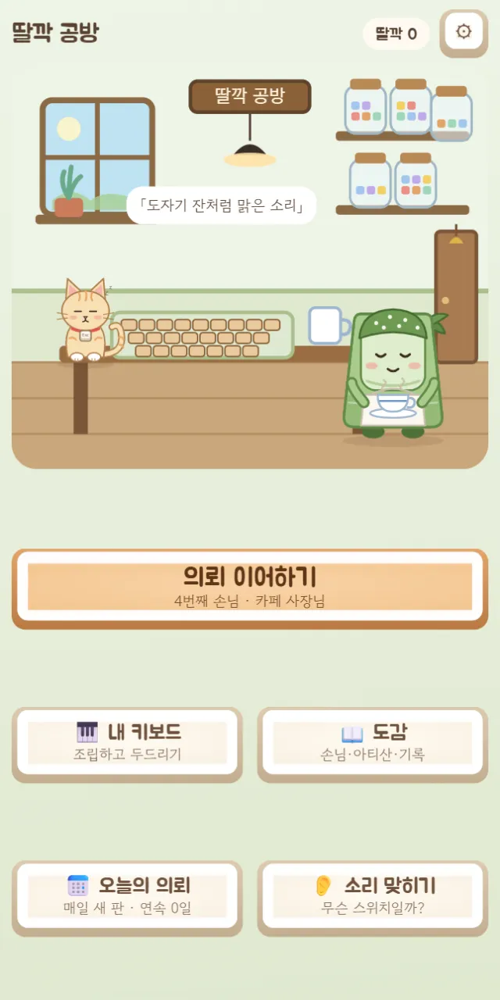
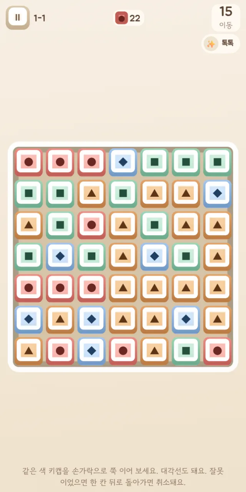
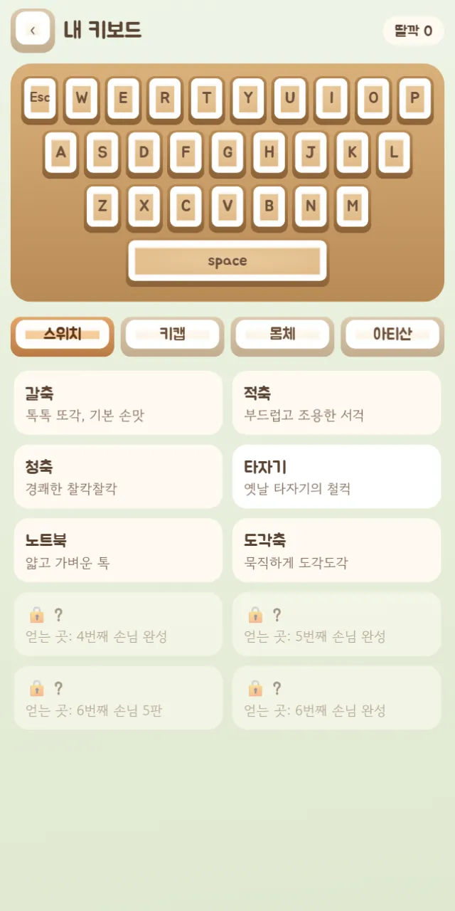
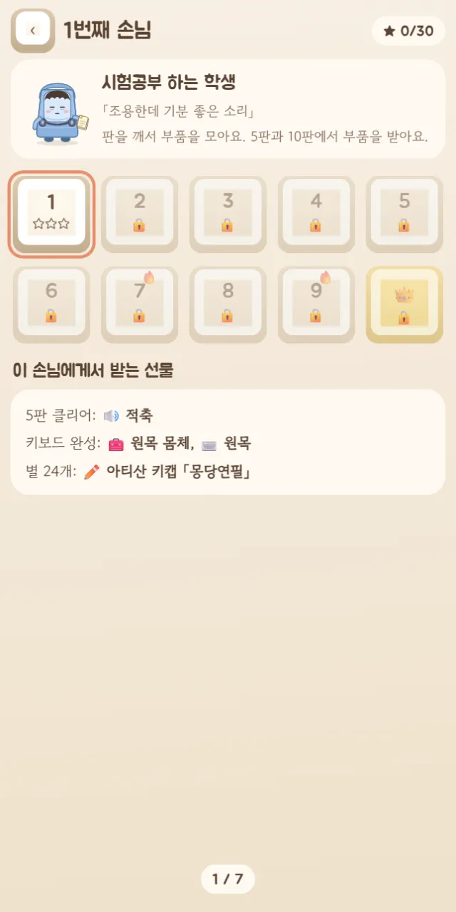

🧩 퍼즐 게임 · 무료 · 설치 없음
딸깍 공방
“같은 색 키캡을 쭉 이어, 딸깍!”
- 한 판 1~3분
- 손님 7명 · 70판
- 실제로 녹음한 키보드 소리
- 진행 자동 저장
회원가입 없이 누르면 바로 시작돼요
어떤 게임인가요?
할아버지가 남긴 작은 키보드 공방. 불 꺼진 공방에 딱 하나 남은 키캡을 누르면 불이 켜지고 할아버지의 편지가 기다려요. 그런데 공방 고양이 타닥이가 키보드 위로 뛰어올라 키캡이 와르르 흩어져 버려요.
공방에는 손님이 한 명씩 찾아와요. 시험공부 하는 학생은 「조용한데 기분 좋은 소리」를, 카페 사장님은 「도자기 잔처럼 맑은 소리」를 바라요. 웹소설 작가, 밤샘 프로그래머, 프로 게이머, 도서관 사서 할머니까지 손님마다 바라는 소리가 달라요.
퍼즐을 깨면 스위치·키캡·몸체 부품이 모이고, 손님마다 열 판을 마치면 부품을 골라 키보드를 조립해 건네요. 갈축·청축·타자기·토프레·IBM 모델F처럼 실제 키보드를 녹음한 소리가 담겨 있어서, 부품을 바꿀 때마다 딸깍 소리가 달라져요.
이렇게 해요
- STEP 1
같은 색 키캡을 이어요
같은 색 키캡을 손가락으로 쭉 이으면 딸깍딸깍 터져요. 대각선도 되고, 한 칸 뒤로 돌아가면 취소돼요.
- STEP 2
이동 수 안에 목표를 채워요
판마다 정해진 이동 수 안에 목표 색을 모으거나 과자 부스러기·커피 같은 방해물을 치우면 성공! 이동이 많이 남을수록 별을 더 받아요.
- STEP 3
키보드를 만들어 건네요
다섯째 판과 열째 판에서 부품을 받아요. 열 판을 다 깨면 스위치·키캡·몸체를 골라 소리를 들어 보고 손님에게 건네요.



🌟 이런 것도 있어요
- 고리: 같은 색 여섯 개 이상을 이은 뒤 그 줄로 돌아와 닫으면 그 색이 판에서 한꺼번에 터져요
- 판에 놓인 스페이스바·엔터·백스페이스 같은 기능 키를 줄에 끼우면 가로줄을 통째로 터뜨리거나 방해물을 치워요
- 🎹 내 키보드: 모은 부품을 바꿔 끼우고 키를 직접 두드려 소리를 들어 봐요
- 📅 오늘의 의뢰는 날마다 판이 바뀌고, 👂 소리 맞히기로 스위치 소리를 맞혀 봐요
- 손님마다 별 24개를 모으면 특별한 아티산 키캡을 받아요
손님마다 🔥 어려운 판과 👑 마지막 판이 기다려요.
이런 분께 추천해요
- 딸깍딸깍 키보드 소리를 좋아하는 분
- 짧게 한 판씩 머리를 식히고 싶은 분
- 귀여운 손님들과 고양이의 이야기를 따라가고 싶은 분
처음 몇 판은 판 아래에 안내가 나와요. 길게 이을수록 키캡 기술이 충전되니, 짧게 여러 번보다 한 번에 길게 이어 보세요.
📱 어떤 기기에서 하면 좋을까요?
- 가장 좋아요휴대폰 세로 화면
손가락으로 키캡을 쭉 이으면 돼요. 소리를 켜고 하면 더 좋아요.
- 가장 좋아요태블릿 가로·세로 모두
판이 크게 보여요. 가로로 두면 화면이 두 칸으로 넓게 나뉘어요.
- 좋아요컴퓨터·노트북 마우스
마우스를 누른 채 끌어서 키캡을 이어요. 넓은 화면에서는 두 칸으로 넓게 보여요.
오른쪽 위 메뉴(⋮ 또는 ···)에서 「다른 브라우저로 열기」를 눌러 크롬이나 사파리로 열어 주세요. 앱 안에서는 전체 화면이 안 되고 저장이 풀릴 수 있어요.
🍎 아이폰·아이패드에서는
- ① 사파리로 열기
카카오톡이나 네이버 앱 안에서는 화면이 좁아요. 「다른 브라우저로 열기」나 사파리로 열어 주세요.
- ② 홈 화면에 추가하기
전체 화면 버튼은 없어요. 공유 버튼(□↑) → 「홈 화면에 추가」로 열면 주소창 없이 꽉 찬 화면이 돼요.
- ③ 소리
이 게임은 키보드 소리가 주인공이에요. 무음 스위치가 켜져 있으면 소리가 나지 않아요. 소리 크기는 ⚙ 설정에서 조절해요.
🤖 갤럭시 등 안드로이드에서는
크롬이나 삼성 인터넷으로 열면 바로 할 수 있어요. 진동과 대사 속도는 ⚙ 설정에서 바꿀 수 있어요.
▶ 바로 해 보기
설치도, 회원가입도 필요 없어요.
딸깍 공방 시작하기game.edoori.co.kr/keycap/